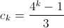

The frog jumps over the vertices of the hexagon ABCDEF, each time moving to one of the neighbouring vertices.
a) How many ways can it get from A to C in n jumps?
b) The same question, but on condition that it cannot jump to D?
c) Let the frog's path begin at the vertex A, and at the vertex D there is a mine. Every second it makes another jump. What is the probability that it will still be alive in n seconds?
d) * What is the average life expectancy of such frogs?
a) It is clear that after an even number of jumps the frog can only be at the vertices A, C or E. Let $a_k, c_k, e_k$ denote the number of paths of length 2k leading from A to A, C and E, respectively. Because of symmetry, $c_k = e_k$. It is easy to see that:
$c_{k + 1} = a_k + 3c_k, a_{k + 1} = 2a_k + 2c_k$.
From here
$c_{k + 2} = a_{k + 1} + 3c_{k + 1} = 2a_k + 2c_k + 3c_{k + 1} = 2 (c_{k + 1} - 3c_k) + 2c_k + 3c_{k + 1} = 5c_{k + 1} - 4c_k$.
From the initial conditions, $c_0 = 0, c_1 = 1$, we find  $($this is easy to prove by induction$)$.
b) We keep the notation $c_k$ from part a) $($now this number will be different$)$. We denote by $b_k$ the number of paths of length 2k - 1 leading from A to B. Then $b_{k + 1} = 3b_k$ $($in two jumps one can return from B to B in two ways and from B to F in one way$)$. But $c_k = b_k$, then, $c_{k + 1} = 3c_k$ for k$>$ 0. As before, $c_1 = 1$, therefore, $c_k = 3^{k-1}$.
b) Since D can only be accessed on an odd jump, the probability that the frog will survive after 2k seconds is equal to the probability that it lives after the 2k - 1 second. We denote the last probability by $P_k$. At this moment, it is in B or F. After two jumps, it will get to D with probability of 1/4, and with a probability of 3/4 it will remain alive. Therefore, $P_{k + 1} = 3 / 4 \times P_k$.
Since $P_1 = 1$, it follows that
c) As can be seen from part c), the probability of getting to some vertex after exactly 2k + 1 seconds is equal to  .
.
Therefore, the average life expectancy of a frog is equal to the sum of the series

This sum can be calculated with the aid of the generating function

In fact, N = f '$($1$)$ = 9.
a)  methods for an even n; it cannot be reached for an odd n.
methods for an even n; it cannot be reached for an odd n.
b) $3^{n/2-1}$ methods for an even n; it cannot be reached for an odd n.
c)  for n = 2k - 1 and for $n = 2k (k ≥ 1)$.
for n = 2k - 1 and for $n = 2k (k ≥ 1)$.
d) 9 seconds.
1. See also problem number 61473.
2. For a general approach to the solution of recurrence equations, see problem number 61458.